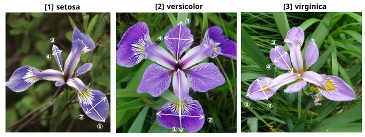
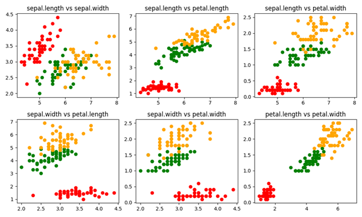
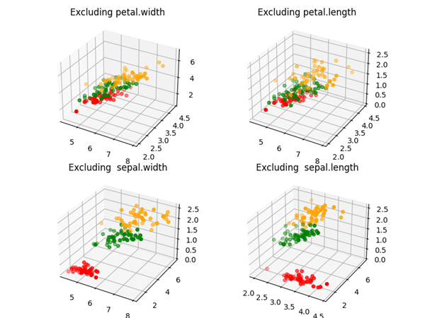

1936年にイギリスの統計学者ロナルド・フィッシャー氏の論文で発表されたため、「フィッシャーのIrisデータセット」とも呼ばれる。
『The use of multiple measurements in taxonomic problems』
3種類のアヤメ（ヒオウギアヤメなど）の「がく片」と「花びら」のサイズを計測したもので、主に多クラス分類（特徴量から花の種類を当てるタスク）のチュートリアルやアルゴリズムのベンチマークとして利用される。
① sepal length (cm) がく片の長さ ･･･ 花の根元にある「がく」の縦の長さ
② sepal width (cm) がく片の幅 ･･･ 「がく」の横の幅
③ petal length (cm) 花びらの長さ ･･･ 花弁（花びら）の縦の長さ
④ petal width (cm) 花びらの幅 ･･･ 花弁（花びら）の横の幅
[1] setosa（セトサ / ヒオウギアヤメ）
[2] versicolor（バーシカラー / ブルーフラッグ）
[3] virginica（バージニカ）

データセット(一部) \[ \begin{array}{c | c | c | c | l} \textbf{sepal.length} & \textbf{sepal.width} & \textbf{petal.length} & \textbf{petal.width} & \textbf{variety} \\ \hline 5.1 & 3.5 & 1.4 & 0.2 & \text{Setosa}\\ 4.9 & 3 & 1.4 & 0.2 & \text{Setosa}\\ 4.7 & 3.2 & 1.3 & 0.2 & \text{Setosa}\\ \text{:} & \text{:} & \text{:} & \text{:} & \text{:}\\ 7 & 3.2 & 4.7 & 1.4 & \text{Versicolor}\\ 6.4 & 3.2 & 4.5 & 1.5 & \text{Versicolor}\\ 6.9 & 3.1 & 4.9 & 1.5 & \text{Versicolor}\\ \text{:} & \text{:} & \text{:} & \text{:} & \text{:}\\ 6.3 & 3.3 & 6 & 2.5 & \text{Virginica}\\ 5.8 & 2.7 & 5.1 & 1.9 & \text{Virginica}\\ 7.1 & 3 & 5.9 & 2.1 & \text{Virginica}\\ \text{:} & \text{:} & \text{:} & \text{:} & \text{:}\\ \end{array} \]
pandas を使って csv を numpy 配列に変換してみる。
(data/dataset_iris/src/csv2npy.py)
label.npy は文字列の配列になる。
import numpy as np
import pandas as pd
# iris.csv を読み込む。タイトル行は自動でスキップしてくれる
df = pd.read_csv("..\data\iris.csv")
# 特徴量（最初の4列）とラベル（最後の列）に分割する
features = df.iloc[:, :4].to_numpy()
label = df.iloc[:, -1].to_numpy()
print(features.shape)
print(label.shape)
# numpy形式 (.npy) で保存する
np.save("features.npy", features)
np.save("label.npy", label)
print("conversion completed: iris.csv --> features.npy， label.npy")
label.npy をロードする場合は、
label = np.load('label.npy', allow_pickle=True)
と、オプションを設定しないと、ValueError が起こる。
ラベルを数値化して .npy に格納したい場合は、以下のようにする。
(data/dataset_iris/src/csv2npy2.py)
label_encoded.npy には 0(Setosa)、1(Versicolor)、2(Virginica)が格納される。
import numpy as np
import pandas as pd
from sklearn.preprocessing import LabelEncoder
# iris.csv を読み込む。タイトル行は自動でスキップしてくれる
df = pd.read_csv("..\data\iris.csv")
# 特徴量（最初の4列）とラベル（最後の列）に分割する
features = df.iloc[:, :4].to_numpy()
le = LabelEncoder()
label_encoded = le.fit_transform(df.iloc[:, -1])
print(features.shape)
print(label_encoded.shape)
# numpy形式 (.npy) で保存する
np.save("features.npy", features)
np.save("label_encoded.npy", label_encoded)
print("conversion completed: iris.csv --> features.npy， label_encoded.npy")
正解ラベル(品種)の3種類は、赤、緑、青などの色で視覚化できる。
特徴量は4次元でそのままでは視覚化できないので、
・4個の内の2個
・4個の内の3個
で視覚化してみる。
※ 次元削減による視覚化は、"(タスク) 次元削減" で試すこととして、ここでは試さない。
※ 赤：setosa、緑：versicolor、オレンジ：virginica
特徴量 4 個の内の 2 個の散布図

コードの一部
(data/dataset_iris/src/scatter_2d.py)
import numpy as np
import matplotlib.pyplot as plt
features = np.load('..\data\features.npy')
label = np.load('..\data\label_encoded.npy')
indices0 = np.where(label == 0)[0]
indices1 = np.where(label == 1)[0]
indices2 = np.where(label == 2)[0]
fig, axes = plt.subplots(2, 3, figsize=(10, 6))
# [0][0] sepal.length vs sepal.width
x0 = features[indices0, 0]
y0 = features[indices0, 1]
axes[0][0].scatter(x0, y0, color='red')
x1 = features[indices1, 0]
y1 = features[indices1, 1]
axes[0][0].scatter(x1, y1, color='green')
x2 = features[indices2, 0]
y2 = features[indices2, 1]
axes[0][0].scatter(x2, y2, color='yellow')
axes[0][0].set_title('sepal.length vs sepal.width')
：
plt.show()
特徴量 4 個の内の 3 個の散布図

コードの一部
(data/dataset_iris/src/scatter_3d.py)
import matplotlib.pyplot as plt
import numpy as np
features = np.load('..\\data\\features.npy')
label = np.load('..\\data\\label_encoded.npy')
indices0 = np.where(label == 0)[0]
indices1 = np.where(label == 1)[0]
indices2 = np.where(label == 2)[0]
fig, axes = plt.subplots(2, 2, figsize=(8, 6), subplot_kw={'projection': '3d'})
# [0][0] Excluding petal.width
x0 = features[indices0, 0]
y0 = features[indices0, 1]
z0 = features[indices0, 2]
axes[0][0].scatter(x0, y0, z0, color='red')
x1 = features[indices1, 0]
y1 = features[indices1, 1]
z1 = features[indices1, 2]
axes[0][0].scatter(x1, y1, z1, color='green')
x2 = features[indices2, 0]
y2 = features[indices2, 1]
z2 = features[indices2, 2]
axes[0][0].scatter(x2, y2, z2, color='orange')
axes[0][0].set_title('Excluding petal.width')
:
plt.show()